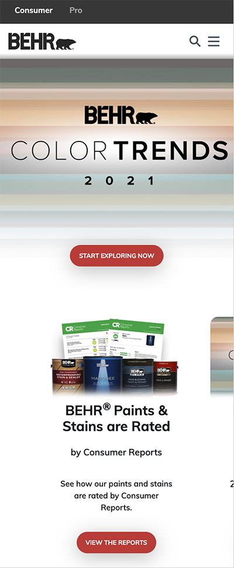
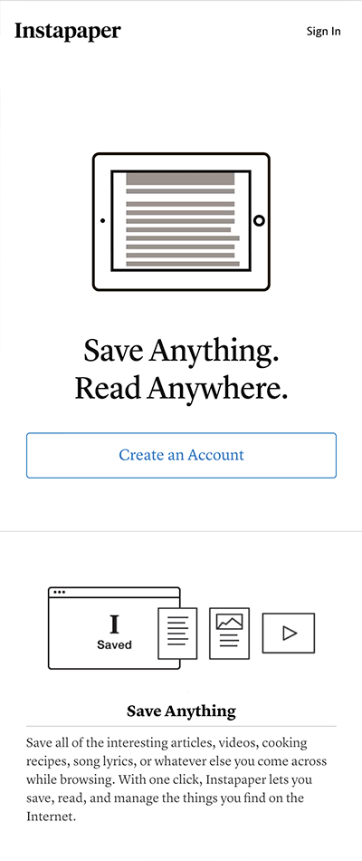
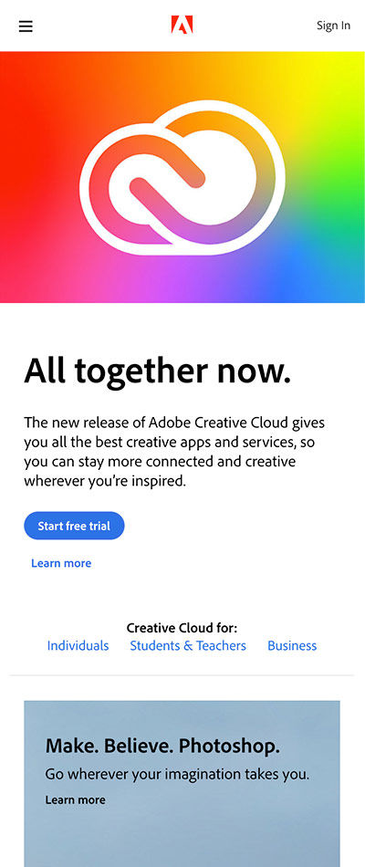

Repetition
Behr
The burnt orange color on the buttons is repeated throughout the site. They use the same color for all clickable links, which gives the page a consistant feel. It also makes it easier for visitors to know where they can click for more product or service information.
White Space & Clean Design
Instapaper
This website is very minimal, with black text, grayscale images, and blue buttons. Because the design is so minimal everything on the page demands attention. The large amounts of white space help to balance the heavy black text and images.
Alignment
Adobe
The Adobe website utelizes strong alignment which gives their website a very clean streamlined feel. The desktop version of their site has three columns which they span content across. All content has clean, even margins. Even on the mobile site you can see that most elements are aligned on the right and left margins.